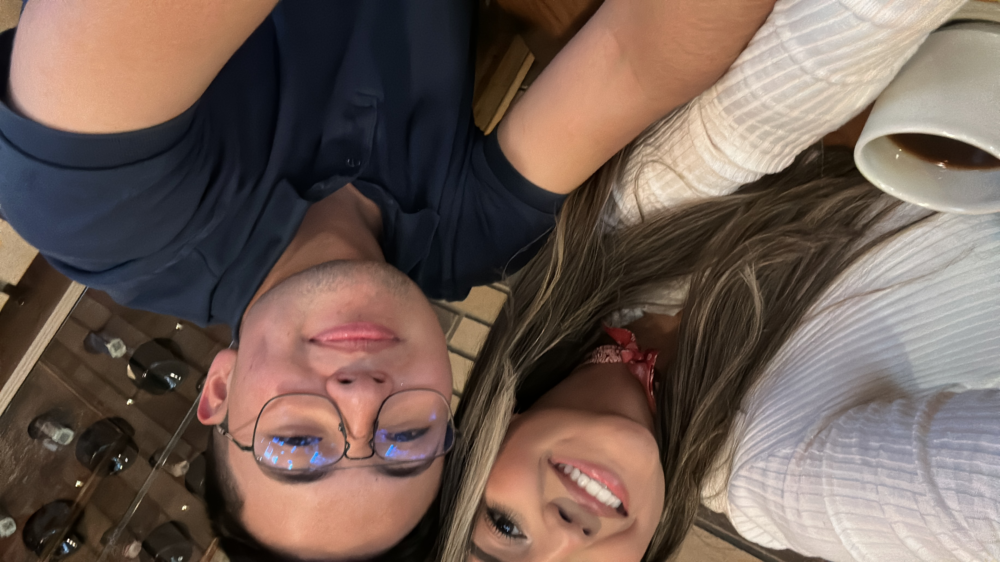
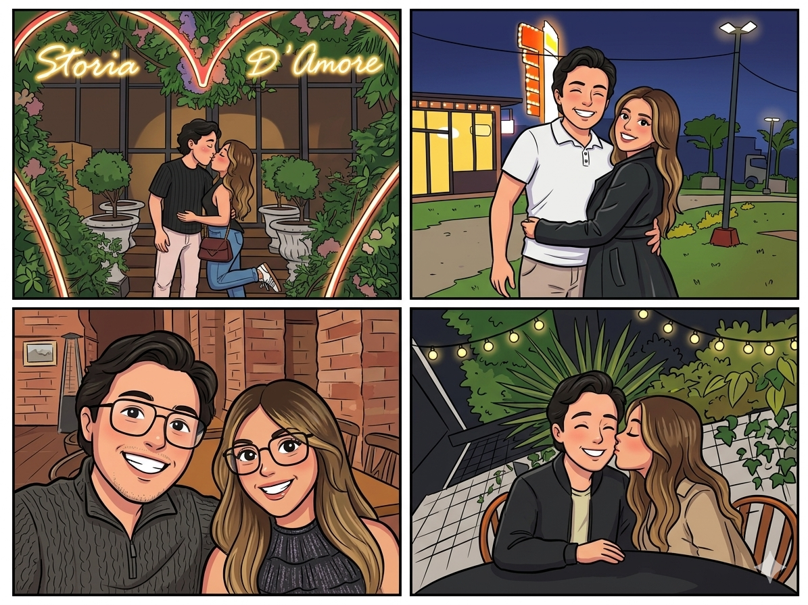
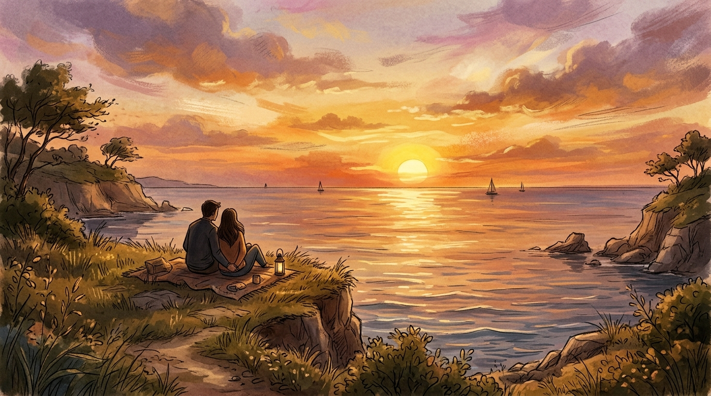

Cada día contigo es una página que guardar para siempre
Lunes, 10 de agosto de 2026
Día uno — donde las estrellas brillan ✨
Mi cielo hermoso, este es el día de inicio para una cuenta atrás que te va a encantar.
Te adoro con mi vida. Tengo la misma emoción que cuando te escribí por primera vez en Instagram
y pudimos vernos… te adoro, princesa mía.
Un video para que no me extrañes
✨ Día 1 de 5

Martes, 11 de agosto de 2026
Mi admiración por ti
Buenos días mi vida. Hoy es un día hermoso, pues la cuenta atrás cada día se va acortando
y vamos acercándonos al día especial. Pero claro, no podemos continuar sin antes decirte
por qué me muero y me derribo por ti. Por qué todos los días de mi vida me despierto
con profunda admiración por mi princesa.
No sabes lo feliz que tú me haces todos los días cuando estoy contigo — frente a frente
o a mil kilómetros de distancia — pero en cualquier lugar donde estás, no sabes lo feliz
que es despertar y que seas mi motivación. Poder decir: carajo, tengo a la mejor
esposa del mundo, la más bella, la más hermosa, quien me hace feliz y a quien quiero
por el resto de mi vida.
No solo por tu gran belleza, por tu gran talento, por tu gran visión del mundo y sobre todo
por ser una mujer tan maravillosa. Por ser la madre que quiero con nuestros hijos y por ser
la princesa que quiero que siempre esté a mi lado.
Porque todos los días le pido a Dios que tus sueños sean mis metas, que cada cosa que pueda
hacer para hacerte feliz y acercarte a cada uno de tus logros, lo voy a hacer. Porque eres
mi propósito, eres mi vida y quien me hace vivirla.
Te adoro mi reina preciosa, con todo su amor — tu príncipe.
👑 Día 2 de 5

Miércoles, 12 de agosto de 2026
Nuestro futuro — Luciano y Victoria
Mi vida hermosa, ¿cómo no mencionar en este momento tan hermoso a quienes,
sin estar todavía en este mundo, ya están presentes en nuestras mentes y en
nuestro corazón?
¿Te acuerdas de cuando nos imaginamos los nombres de nuestros hijos y tú lo
tenías más claro que nunca? Me enamoré desde ese día del nombre
Luciano, de la princesa Victoria,
y del futuro que nos espera a todos.
Muero de ansias de que eso ya sea nuestra realidad. Mientras tanto,
seguimos amándonos más, construyendo nuestro castillo y nuestro imperio
para poder disfrutar de nuestros hijos todos los días.
No sabes cuánto te adoro y cuánto te amo, mi princesa.
Recuerda que ya falta poco para vernos y ser más felices.
🏡 Día 3 de 5

Jueves, 14 de agosto de 2026
Un poema para ti, mi princesa
Para la princesa más hermosa del mundo,
hoy te escribo un poema con todo mi amor:
Mi vida a tu lado es un cielo estrellado,
un remanso de paz donde al fin he llegado.
Atrás quedó el frío, la duda y el miedo;
contigo, mi reina, a la tristeza no cedo.
Tus ojos me entregan la luz que me guía,
tu voz me regala la más dulce armonía.
En cada abrazo tuyo encuentro mi hogar,
el puerto sereno donde anhelo anclar.
Tus manos cobijan mi alma cansada,
tu sonrisa ilumina la más larga jornada.
Compartir la existencia es mi dicha mayor,
crecer a tu lado sembrando este amor.
No pido riquezas, ni fama, ni gloria,
tan solo a tu lado escribir nuestra historia.
Pimpolla del alma, te amo con fervor,
gracias, mi reina, por darme un futuro mejor.